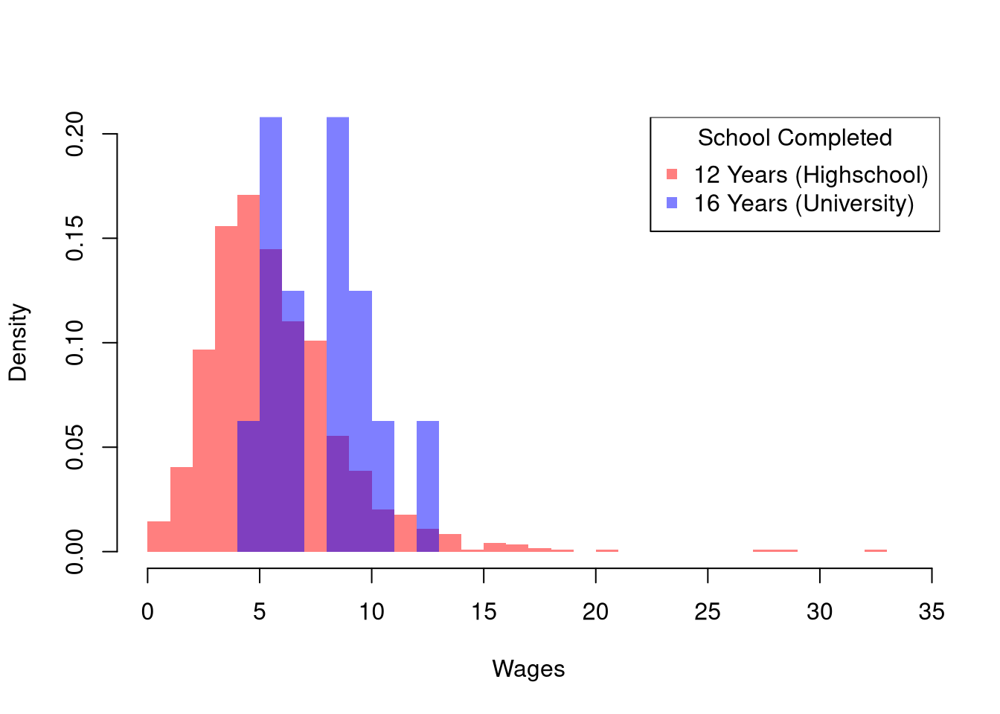
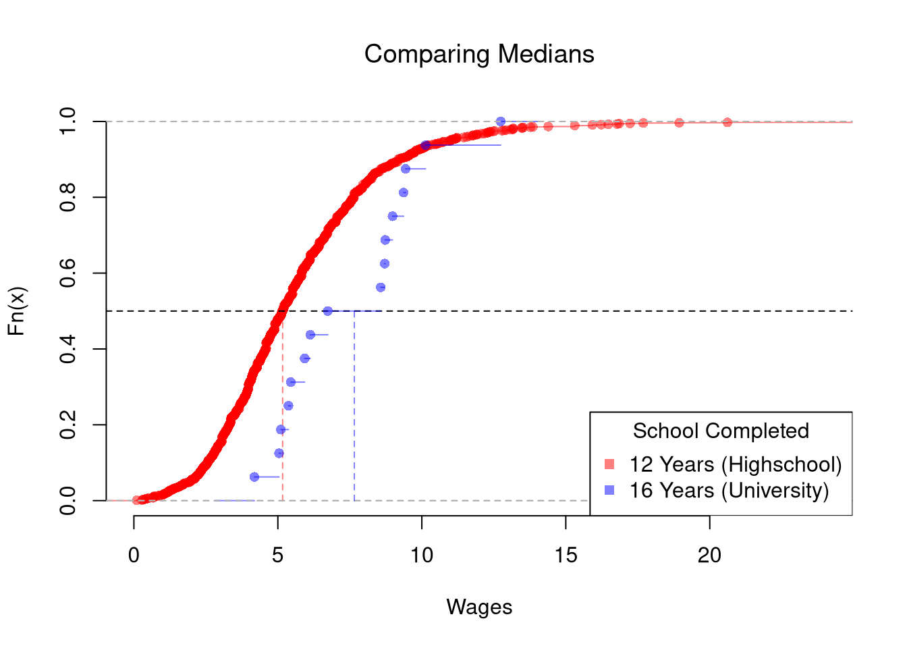
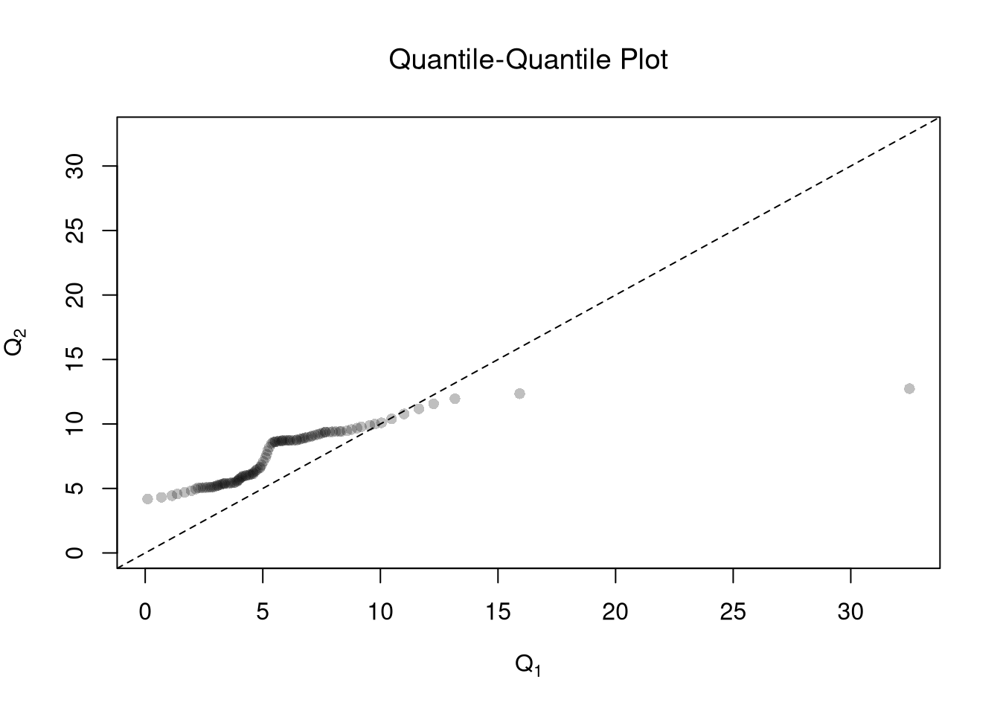
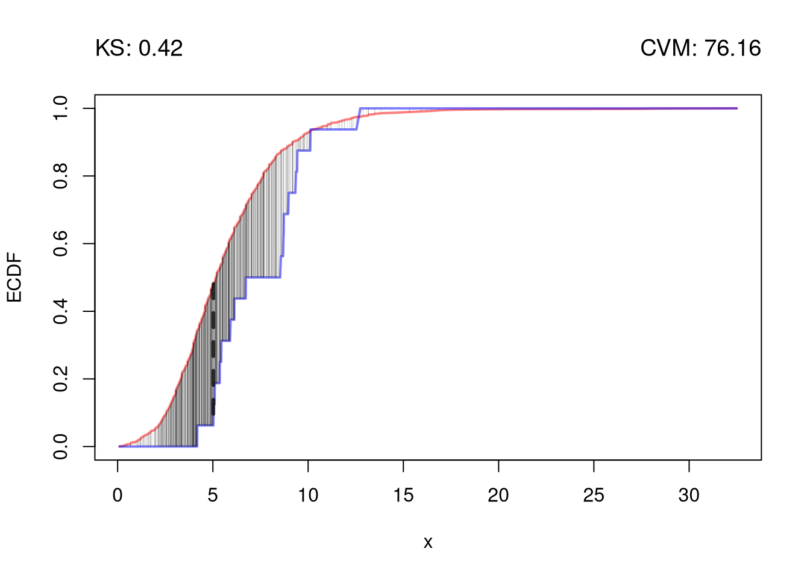

Code
# Install R Data Package and Load in
install.packages('Ecdat') # only once
library('Ecdat') # 'load' anytime you want to use the data
?Wages1 # details about the dataset we want
head(Wages1)This chapter compares two groups: how the distribution of one variable changes across the categories of another. We begin with discrete data, where both variables are factors, and then turn to “mixed” data, where a cardinal outcome \(\hat{Y}_{i}\) is split into groups by a factor \(\hat{X}_{i}\). In each case we summarize the groups, compute a statistic for the difference between them, and test that difference using the resampling methods from Hypothesis Testing.
When both variables are factors, a natural way to summarize their association is to look at how the average of one (treated as cardinal) changes across categories of the other.
Comparing \(\hat{M}_{Y|x}\) across values of \(x\) is useful as the simplest summary of association between a cardinal outcome and a factor: a single number per subgroup shows whether \(Y\) tends to be higher in one category. The calculation breaks into two steps: row-by-row, compute the conditional distribution \(\hat{p}_{y\mid x}\), then take its weighted average using the values of \(y\).
Suppose our data is given in the table shown below.
| \(x=0\) | \(x=1\) | |
|---|---|---|
| \(y=1\) | \(12\) | \(8\) |
| \(y=2\) | \(18\) | \(6\) |
| \(y=3\) | \(10\) | \(16\) |
First, we compute conditional probabilities to examine how the distribution changes.
| \(x=0\) | \(x=1\) | ||
|---|---|---|---|
| \(y=1\) | \(12/40\) | \(8/30\) | |
| \(y=2\) | \(18/40\) | \(6/30\) | |
| \(y=3\) | \(10/40\) | \(16/30\) | |
| \(40/40\) | \(30/30\) |
Second, we apply the conditional-mean formula row by row: \[\begin{eqnarray*} \hat{M}_{y|x=0} = 1 \frac{12}{40} + 2 \frac{18}{40} + 3 \frac{10}{40} = \frac{12+36+30}{40} = \frac{78}{40} \\ \hat{M}_{y|x=1} = 1 \frac{8}{30} + 2 \frac{6}{30} + 3 \frac{16}{30} = \frac{8+12+48}{30} = \frac{68}{30} \end{eqnarray*}\] Notice that \(\hat{M}_{y|x=0} < 2 < \hat{M}_{y|x=1}\), which shows that the mean value of \(Y\) is higher when \(X\) is higher. I.e., there is a positive association.
For mixed data, \(\hat{Y}_{i}\) is a cardinal variable and \(\hat{X}_{i}\) is a factor variable (typically unordered). For such “grouped data”, we analyze associations via group comparisons. The basic idea is best seen in a comparison of two samples, which corresponds to an \(\hat{X}_{i}\) with two categories. For example, the heights of men and women in Canada or the homicide rates in two different American states.
We will consider the wages for people with and without completing a degree. To have this data on our computer, we must first install the “Ecdat” package once. Then we can access the data at any time by loading the package.
# Install R Data Package and Load in
install.packages('Ecdat') # only once
library('Ecdat') # 'load' anytime you want to use the data
?Wages1 # details about the dataset we want
head(Wages1)To compare wages for people with and without completing a degree, we start by making a histogram for both groups.
library('Ecdat')
Y <- Wages1[, 'wage'] # cardinal outcome (hourly wage)
# Logical index for each group, then subset Y by it
X1_id <- Wages1[, 'school'] == 12 # TRUE for high-school only
Y1 <- Y[X1_id] # wages of high-school group
X2_id <- Wages1[, 'school'] == 16 # TRUE for university graduates
Y2 <- Y[X2_id] # wages of university group
# Initial summary figure: two overlaid histograms on a common grid
bks <- seq(0, 34, by=1) # shared bin edges
dlim <- c(0, .2) # shared y limit
cols <- c(rgb(1, 0, 0, .5), rgb(0, 0, 1, .5)) # semi-transparent fill
hist(Y1, breaks=bks, ylim=dlim,
col=cols[1], xlab='Wages',
freq=FALSE, border=NA, main=NA)
hist(Y2, breaks=bks, ylim=dlim,
col=cols[2],
freq=FALSE, border=NA, add=TRUE)
legend('topright',
col=cols, pch=15,
legend=c('12 Years (Highschool)', '16 Years (University)'),
title='School Completed')
The histogram may show several differences between groups or none at all. In general, we test whether the difference in some statistic \(\hat{Z}\) equals \(0\). Often, the first statistic we investigate for hypothesis testing is the difference in means, \(\hat{M}\).
We often want to know whether two samples have the same mean.
The mean difference is useful as the workhorse single-number summary of “how different are these two groups, on average”, because it is on the same scale as the outcome itself and the natural null hypothesis \(\hat{D}=0\) corresponds to “no difference in population means”. We can test that hypothesis either by inverting a confidence interval or by imposing the null. The bootstrap below pegs \(\hat{M}_{Y1}\) and \(\hat{M}_{Y2}\) at the wage data and reports \(\hat{D}\): the university group has the higher mean wage, so \(\hat{D}<0\) here, and the next step is asking whether the gap is bigger than sampling noise alone would produce.
For “imposing the null”, it is more common to use \(p\)-values instead of confidence intervals.
The permutation test (also called a randomization test) is useful whenever the null hypothesis is “no association”, because reshuffling labels imposes that null exactly by construction, without needing to assume a distributional form. The shuffled distribution always sums to the same pooled data, so the only variability comes from re-splitting the labels. If using a hard decision rule, it is most common to reject the null at the \(5\%\) level when \(p<0.05\) and fail to reject when \(p>0.05\).
Those are purely statistical statements that only speak to how frequent differences are generated by random chance. They do not say why there are any differences or how large they are. Even on purely statistical grounds, however, we would want to be cautious about a making data-driven decisions when
For such reasons, applied statisticians consider many statistics
The above procedure generalized from differences in means to other quantiles statistics like medians. To start, we plot the ECDF’s for both groups.
# Quantile Comparison
## Distribution 1
F1 <- ecdf(Y1)
plot(F1, col=cols[1],
pch=16, xlab='Wages', xlim=c(0, 24),
main=NA, bty='n')
title('Comparing Medians', font.main=1)
## Median 1
med1 <- quantile(F1, probs=0.5)
segments(med1, 0, med1, 0.5, col=cols[1], lty=2)
abline(h=0.5, lty=2)
## Distribution 2
F2 <- ecdf(Y2)
plot(F2, add=TRUE, col=cols[2], pch=16)
## Median 2
med2 <- quantile(F2, probs=0.5)
segments(med2, 0, med2, 0.5, col=cols[2], lty=2)
## Legend
legend('bottomright',
col=cols, pch=15,
legend=c('12 Years (Highschool)', '16 Years (University)'),
title='School Completed')
The above procedure is quite general and extends to other quantiles. Note that bootstrap tests can perform poorly with highly unequal variances or skewed data. To see this yourself, make a simulation with skewed data and unequal variances.
In principle, we can also examine whether there are differences in spread (sd or IQR) or shape (skew or kurtosis). We use the same hypothesis testing procedure as above
We can also examine whether there are any differences between the entire distributions. We typically start by plotting the data using ECDF’s or a boxplot, and then calculate a statistic for hypothesis testing. Which plot and test statistic depends on how many groups there are.
One useful visualization for two groups is to plot the quantiles against one another: a quantile-quantile plot. I.e., the first data point on the bottom left shows the first quantile for both distributions.
# Wage Data (same as from before)
#library(Ecdat)
#Y1 <- sort( Wages1[Wages1[, 'school'] == 12, 'wage'])
#Y2 <- sort( Wages1[Wages1[, 'school'] == 16, 'wage'] )
# Compute Quantiles
quants <- seq(0, 1, length.out=101)
Q1 <- quantile(Y1, probs=quants)
Q2 <- quantile(Y2, probs=quants)
# Compare Distributions via Quantiles
#ry <- range(c(Y1, Y2))
#plot(ry, c(0, 1), type='n', font.main=1,
# main='Distributional Comparison',
# xlab='Quantile',
# ylab='Probability')
#lines(Q1, quants, col=2)
#lines(Q2, quants, col=4)
#legend('bottomright', col=c(2, 4), lty=1,
# legend=c(
# expression(hat(F)[1]),
# expression(hat(F)[2])
#))
# Compare Quantiles
ry <- range(c(Y1, Y2))
plot(Q1, Q2, xlim=ry, ylim=ry,
xlab=expression(Q[1]),
ylab=expression(Q[2]),
main=NA,
pch=16, col=grey(0, .25))
title('Quantile-Quantile Plot', font.main=1)
abline(a=0, b=1, lty=2)
To go from a picture of two distributions to a single-number summary of how different they are, we measure the gap between their ECDFs.
\(\hat{KS}\) is useful when we expect distributions to differ by a shift: the gap piles up at one location and the max catches it. The cost is that \(\hat{KS}\) can miss differences where small positive and small negative gaps cancel along the support. \(\hat{CVM}\) is useful for accumulated small differences spread across the support, since every pooled sample point contributes to the sum.
# Distributions
y <- sort(c(Y1, Y2))
F1 <- ecdf(Y1)(y)
F2 <- ecdf(Y2)(y)
# Kolmogorov-Smirnov statistic: largest vertical gap
KS_gap <- abs(F1 - F2)
KSq <- which.max(KS_gap)
KSqv <- round(KS_gap[KSq], 2)
# Cramer-von Mises statistic (p=2): summed squared gaps
CVMqv <- round(sum((F1 - F2)^2), 2)
# Visualize Differences
plot(range(y), c(0, 1), type='n', xlab='x', ylab='ECDF')
lines(y, F1, col=cols[1], lwd=2)
lines(y, F2, col=cols[2], lwd=2)
# KS
title( paste0('KS: ', KSqv), adj=0, font.main=1)
segments(y[KSq], F1[KSq], y[KSq], F2[KSq],
lwd=3, col=grey(0, .75), lty=2)
# CVM
title( paste0('CVM: ', CVMqv), adj=1, font.main=1)
segments(y, F1, y, F2, lwd=.25, col=grey(0, .2))
Just as before, we use resampling for hypothesis testing. To impose the null hypothesis of identical distributions, we permute the group labels: each resample keeps the pooled data but randomly re-splits it into two groups of the original sizes. Each permutation that produces a statistic at least as large as the observed one is a case where random label-shuffling alone created a gap this big, so the \(p\)-value is the fraction of such permutations. A small \(p\)-value means the observed gap is hard to explain by chance.
# KS and CVM statistics for any two-group split
ks_cvm <- function(Y1, Y2){
y <- sort(c(Y1, Y2))
F1 <- ecdf(Y1)(y)
F2 <- ecdf(Y2)(y)
gap <- abs(F1 - F2)
c(KS=max(gap), CVM=sum(gap^2))
}
stat_obs <- ks_cvm(Y1, Y2)
# Permutation null distribution: reshuffle group labels
Y_pooled <- c(Y1, Y2)
n1 <- length(Y1)
n <- length(Y_pooled)
perm_stats <- matrix(NA, nrow=999, ncol=2,
dimnames=list(NULL, c('KS', 'CVM')))
for(b in seq(nrow(perm_stats))){
id1 <- sample(n, n1, replace=FALSE)
perm_stats[b, ] <- ks_cvm(Y_pooled[id1], Y_pooled[-id1])
}
# Permutation p-values
p_ks <- mean(perm_stats[, 'KS'] >= stat_obs['KS'])
p_cvm <- mean(perm_stats[, 'CVM'] >= stat_obs['CVM'])
round(c(KS_stat=stat_obs[['KS']], KS_pval=p_ks,
CVM_stat=stat_obs[['CVM']], CVM_pval=p_cvm), 3)
## KS_stat KS_pval CVM_stat CVM_pval
## 0.418 0.002 76.164 0.001These methods extend naturally from two groups to many. See Multiple Groups for the ANOVA approach to comparing \(G\) groups simultaneously.
Comment the script you wrote for this chapter, then restart R and check that it runs from a clean session, then check the script with AI as explained in Working with AI. Write three sentences from memory on the main statistical idea of this chapter, and ask the assistant what is wrong, vague, or missing. Finish with your own questions about whatever you found hardest.
A permutation test shuffles the group labels to build a null distribution, while a bootstrap test resamples with replacement from each group separately. Explain why permutation is appropriate for testing “no difference between groups” and when you might prefer the bootstrap instead.
Using the Wages1 data from the Ecdat package, compute the difference in mean wages \(\hat{D} = \hat{M}_{Y1} - \hat{M}_{Y2}\) between workers with \(12\) years of schooling and workers with \(16\) years of schooling. Then compute the Kolmogorov-Smirnov statistic \(\hat{KS}\) between the two wage distributions by hand (i.e., find the maximum absolute difference between the two ECDF’s evaluated at the pooled sorted data).
Using the mtcars dataset, split cars into two groups based on transmission type (am: 0 = automatic, 1 = manual). Write a permutation test with \(B = 9999\) iterations to test whether the difference in mean mpg between automatic and manual cars is statistically different from zero. Report the \(p\)-value.
This chapter compared two groups in three ways: mean differences, quantile differences, and distributional comparisons via \(\hat{KS}\) and \(\hat{CVM}\). The worked example throughout used wages from the Wages1 dataset split by schooling (12 vs 16 years), with permutation tests for \(p\)-values; the small worked example of summer earnings \(A=\{18,20,25,30\}\) and \(B=\{19,21,24,35\}\) walked through the cell-by-cell \(\hat{CVM}=1/4\) calculation. The next chapter moves from group differences to association: single-number statistics that summarize how two variables move together across the whole dataset.